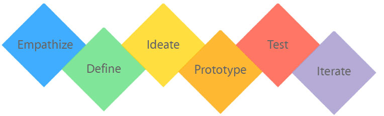
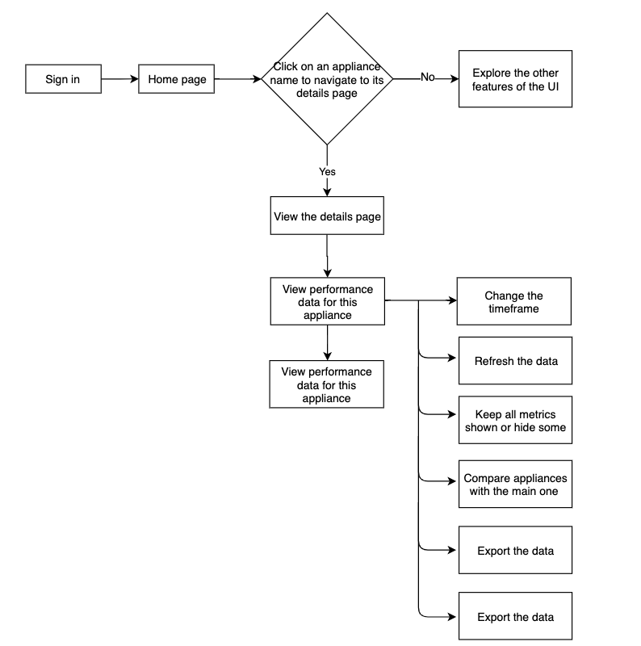
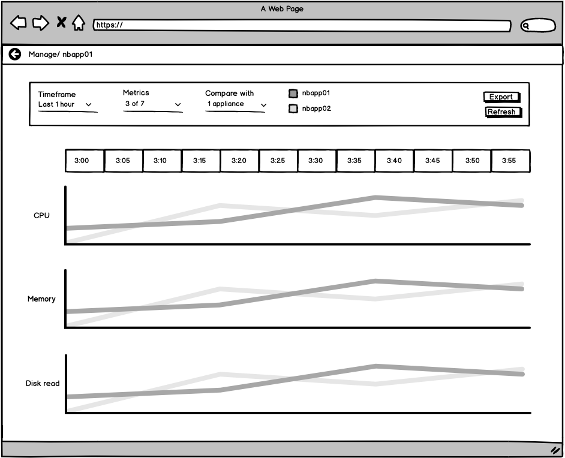
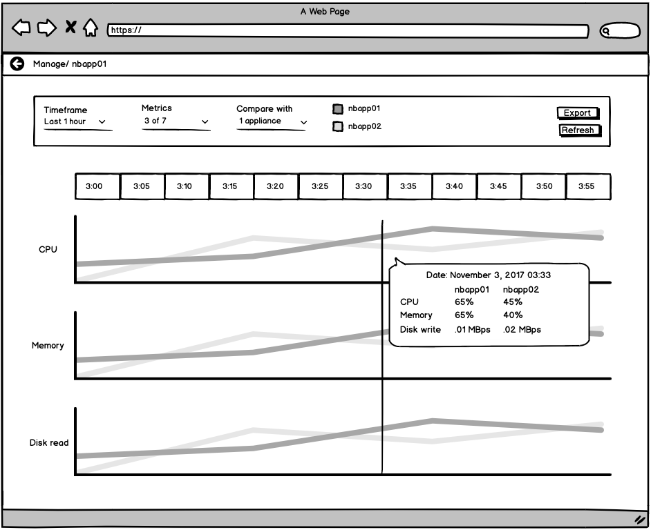
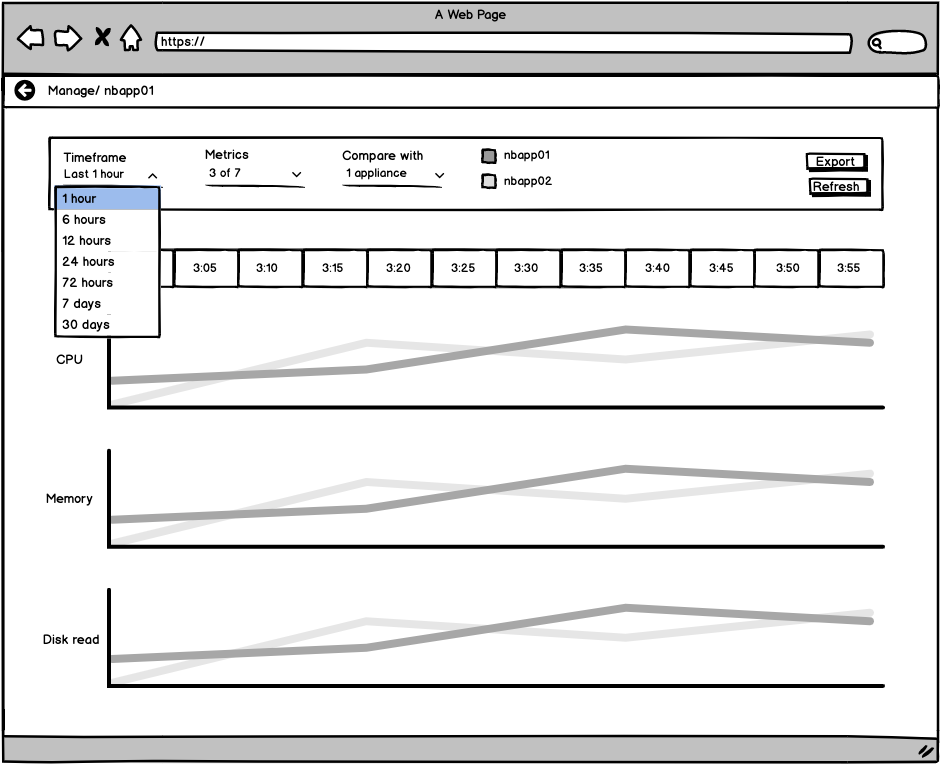
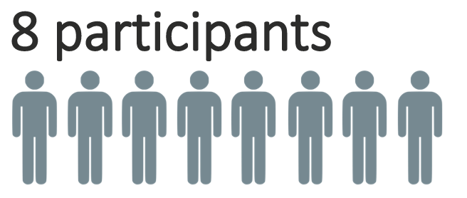

Role: Interaction designer
Team: 4 people including myself (a user researcher, interaction designer, and visual designer)
Techniques: wireframing, prototyping, usability testing
PROBLEM
Problem statement goes here
HYPOTHESIS
description
GOALS
REQUIREMENT GATHERING
We met with the project manager, architect, and engineer leads to understand the requirements and define the MVP and scope. Once the features were defined we were able to create user stories and define the tasks and scenarios.
USE CASES
The backup admin would view the performance to see:
- Where the bottlenecks are
- If the network is working well or not
- The history of the appliance health
PROPOSED SOLUTION
Solution statement
DESIGN PROCESS AND PRINCIPLES

Heuristic evaluation—UI Principles
Match between system and the real world
Recognition rather than recall
Flexibility and efficiency of use
Aesthetic and minimalist design
Help users recognize, diagnose, and recover from errors
Visibility of system status
Help and documentation
User control and freedom
Consistency and standards
Error prevention
Graphic Design Principles
Negative space
Balance
Contrast
Gestalt principle of proximity
Gestalt principle of closure
Gestalt principle of continuation
USERFLOW

WIREFRAMES
I researched charting libraries and data visualizations such as D3 and Highcharts to get inspiration. I iterated and validated the wireframes with the stakeholders and I worked alongside my UX peers to bring the lo-fi wireframes into hi-fi mockups.



PROTOTYPE
I created the interactive prototype using Axure and I used Adobe XD as the foundation to build the screens.
USABILITY TESTING
The team and I along with our designated user researcher tested the designs.
During the user research sessions, I actively took notes and asked questions to the participants.
We tested 8 people through 1:1 WebEx sessions.

Highlights from the sessions were:
- The order of the metrics worked well as long as they have the options to hide metrics
- Putting alerts upfront is important so that the backup admin is aware
- Comparing the health of one appliance to another is helpful
- Need to specify the time-zone for the appliances because they can be in different time-zones
After the usability sessions were over, together as a team we had a debrief. We discussed our findings and impressions.
Based on the feedback that we received from the usability testing I iterated the designs and collaborated with my team to review my iterations during our readout with the product manager and engineering team.
CHALLENGES OVERCOME
An appliance collects many data points for a given amount of time. Given the results from the user testing, we chose to support 1 hour, 6 hours, 12 hours, 24 hours, 72 hours, 7 days, and 30 days. Given the collection interval of the data, we had to accommodate the large data sent as the timeframe increased.
HAND-OFF
After the designs were finalized, I created a specification document using PowerPoint.
I shared the Azure prototype and spec with the engineering team. Once shared the engineering team was able to discuss the technical feasibilities with us. Since the team works in Agile and divides their work in sprints, they were able to take the prototype and divide the features into tangible engineering tasks. I worked very closely with the engineering team to make sure that the implementation resembled the prototype.